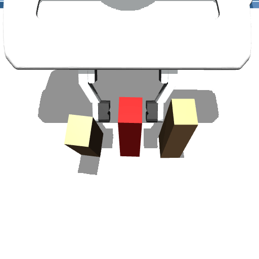
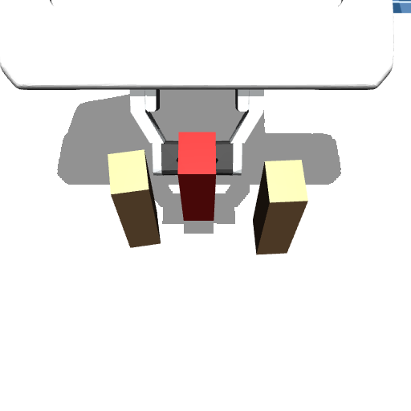
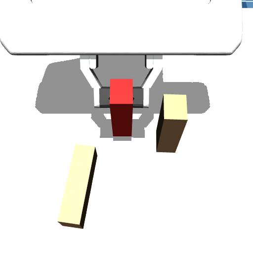

1 Small errors, different outcomes
Picking from a stack, pushing a tall bottle, inserting a peg, nudging an object near an edge: a few millimetres of error in the start or the action decide the outcome. Here the same command lifts the middle block cleanly or tips a neighbour.



A state whose futures, sampled over the robot's own small errors, split into different outcomes is a fork. A world model's branching fidelity: does it fork where physics does?
2 The fork probe: a branching-fidelity test

physics engine
or learned world model

- Samples the robot's measured perception (2.5 mm) and execution (~3 mm) errors.
- Flags two separate groups, not just spread: futures can vary smoothly with one outcome; a fork has a gap.
- No task labels, failure data or tuned thresholds.
Upper reference: the physics engine. MuJoCo with the true masses and friction is not deployable, but sets the bar: 88% of forks caught, 7% false alarms, unseen layouts, one camera image.
3 Similar error, different branching
Two world models in DINOv2 feature space. By average error they look alike, both 3–4× better than predicting that nothing moves. The fork probe separates them.

4 Why
In physics, futures differ only because starts and commands differ, and diverge only near the boundary between outcomes.
5 Fork-aware training
Uncertain starts: put the uncertainty where it is, in the robot's knowledge of the scene; perturb the start, roll out deterministically. Curate with the split test: find each training scene's rare branch without labels and oversample it.
False alarms 7–11%. Part of the gain may come from a faster training recipe. A generative model given the same uncertain starts still catches 0%.
6 Application: a label-free safety signal
People judge whether a stack will fall by imagining it a few times with slightly different guesses of where things are; if the outcomes disagree, it is precarious (the intuitive physics engine of cognitive science). The probe is this check with measured errors. When one branch is irreversible, as for toppling rigid bodies, a fork marks the edge of the safe set.
A proxy, not a failure detector, and not for every task: a fork with two harmless branches is a false alarm, an action that always fails never splits, and gradual harm (spills) need not split. Our follow-up builds a label-free safety filter on this signal.
7 Takeaways
Limitations: simulation, one three-block task; the ground truth uses the same error model the probe samples; small world models, trained once.